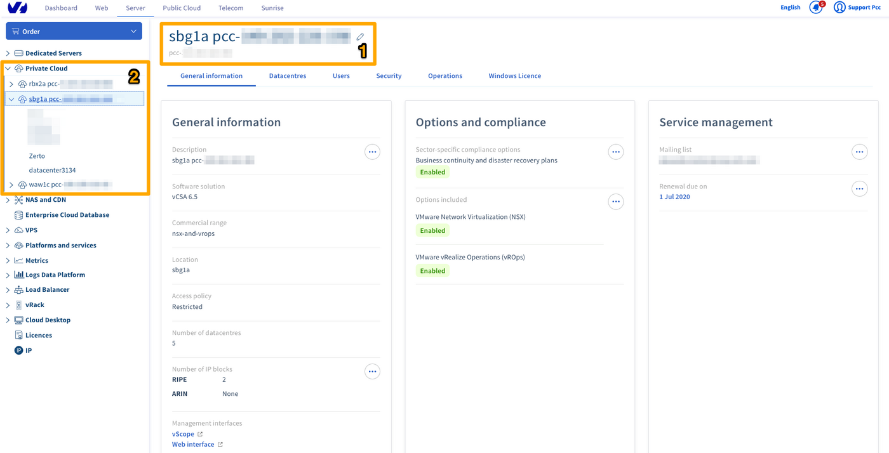
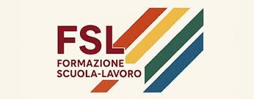

Ho svolto il mio percorso FSL presso Netwatch, un'azienda privata
gestita da Claudio Venturi, situata in
Strada dei Tre Camini 9, 60013 Corinaldo (AN).
Netwatch è una realtà di dimensioni ridotte,formata dal solo titolare Claudio Venturi, specializzata
nella gestione di infrastrutture server per piccole e grandi startup.
La maggior parte dei clienti è situata all'estero,
il che rende il lavoro prevalentemente in modalità smartworking e remota.
Ho scelto Netwatch perché ritenevo potesse insegnarmi come funziona realmente il lavoro
in ambito IT, con clienti internazionali e una gestione moderna basata su task precise
e responsabilità concrete.
Periodo 1: 19 maggio / 7 giugno 2025

Durante il primo periodo mi sono occupato principalmente della gestione e manutenzione
di server farm di piccole startup, sia nel settore gaming che nella gestione di dati
aziendali per piccole imprese.
Una delle attività principali è stata la pulizia delle macchine scadute, ovvero server
non rinnovati dai clienti, attraverso il sistema di gestione offerto da OVH,
uno dei principali provider cloud europei. Lavoravo a stretto contatto con Claudio Venturi,
l'unico componente dell'azienda.
Cosa ho imparato
Utilizzo di Linux per la gestione remota dei server
Gestione autonoma di server: creazione, ottimizzazione ed eliminazione
Smontaggio fisico di computer e componenti hardware
Risoluzione di problemi complessi legati all'infrastruttura
Periodo 2: 8 / 20 settembre 2025
Il secondo periodo è caduto in un momento in cui la maggior parte dei clienti,
quasi tutti situati all'estero, erano ancora in ferie. Il carico di lavoro era quindi
ridotto rispetto al primo periodo, ma non per questo meno significativo.
L'attività principale è stata la gestione degli IP delle macchine: attraverso un documento
Excel contenente tutti gli indirizzi IP attivi, abbiamo identificato ed eliminato le macchine
offline, ovvero quelle dismesse dai clienti.
Il momento più critico dell'intero percorso è avvenuto in questo periodo: due server
rischiavano di perdere dati in modo irreversibile. Siamo intervenuti tempestivamente
ed evitato la perdita, un'esperienza che mi ha fatto capire concretamente l'importanza
della prontezza e della precisione in questo lavoro.
Cosa mi ha colpito
Il metodo di lavoro strutturato per task precise e ben definite
La complessità reale dietro la gestione di un'infrastruttura server
La responsabilità che comporta lavorare con dati di clienti reali
Cosa mi ha lasciato questa esperienza

Il percorso FSL presso Netwatch mi ha dato una visione concreta e diretta di come
funziona il mondo del lavoro in ambito IT, lontano dalla teoria scolastica.
A livello professionale ho acquisito la capacità di gestire un server in modo autonomo
in tutte le sue fasi: creazione, configurazione, ottimizzazione ed eliminazione.
Ho anche sviluppato una maggiore capacità di affrontare e risolvere problemi
medio-complessi sotto pressione.
A livello personale è stato il mio primo contatto reale con il mondo lavorativo,
in un contesto internazionale e moderno. Un'esperienza che ha confermato la direzione
che voglio dare al mio futuro professionale.